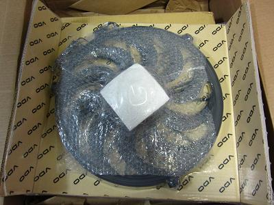
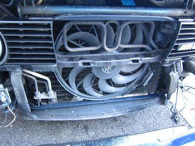
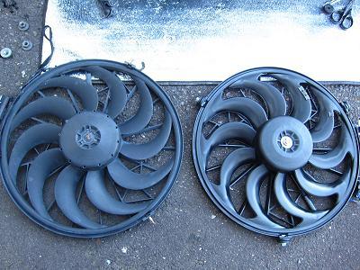
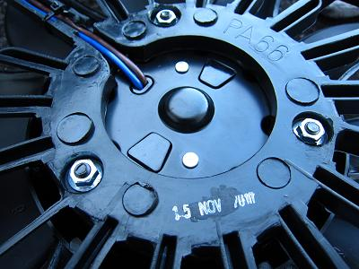
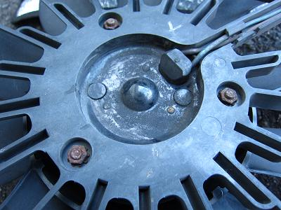
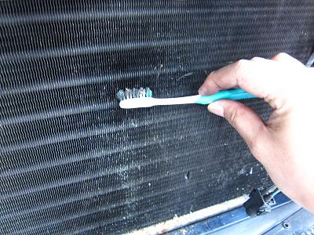
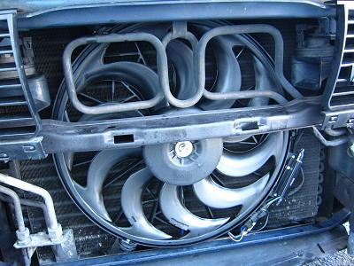
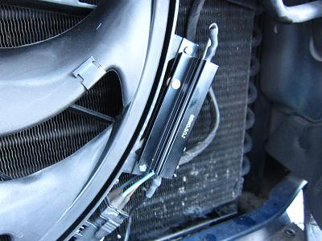

 取り寄せた電動ファン 社外から純正まで４つのメーカーの物があった。 純正（OEM)はBEHRだ。 サード品は少し不安なので、今回はVDOの物にした。 $170だったので日本円で13000円くらい。 国内で調達することを思うと格安だ。 |
  バンパーとグリルを外して、ファンを取り外す。 ナット３つと配線カプラーを外せばファンはフリーになる。 はめ込まれているゴムのグロメットが硬化していて、少し外しずらかった。 |
  左がVDO 右が純正品 VDOはカプラーがしっかり固定できず、少し手直しが必要な部分もあり、作りが雑だった。 |
 コンデンサーにゴミが詰まっていたので、フィンを潰さないように歯ブラシでやさしく掃除しておいた。 |
 ファンを取り付けた図 この時まで気づかなかったが、羽にバランサーが取り付けられていた。 動かしてみて問題が無いことを確認する。振動や音も無く良好だ。 |
 レジスターは純正の物と互換性はなさそうだ。 形状がまったく違う。 ということは、壊れたらassyで交換か？！ もしもの為に取り外したファンは捨てずに取っておこう・・・ ここまで数々の水温上昇対策をしてきたが、夏を過ぎた今も水温が落ち着かない。走ってれば問題ないのだけど・・・ もうやりつくした感があるが、原因は何なんだろうか＾＾； 思い切ってラジエター交換してみるか？！ さすがに修理疲れが出てきた。。。 |